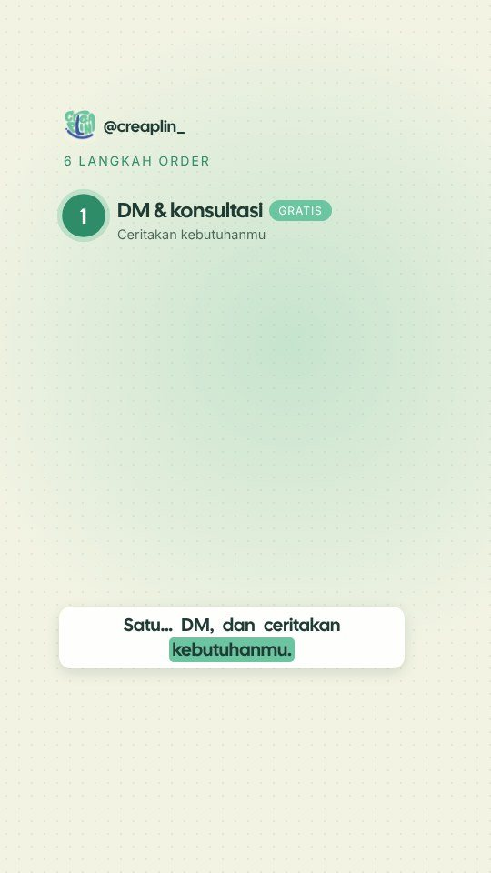
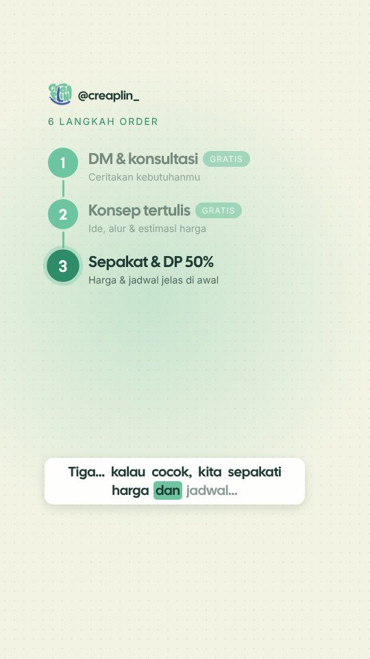
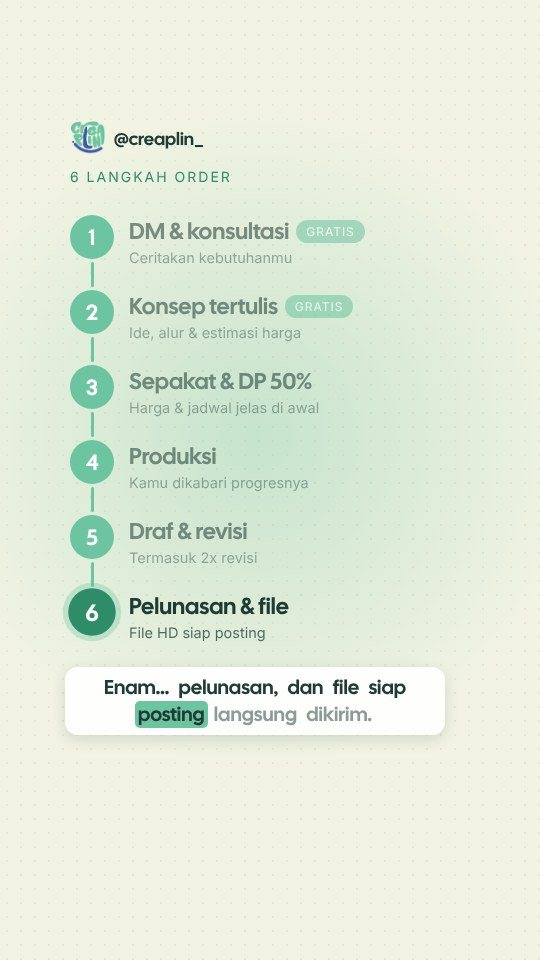

Creaplin
Terbuka untuk proyek baru
Aku membuat yang rumit jadi mudah dilihat .
halo, aku
Aku Creaplin desainer dari Bukittinggi yang senang mengubah program, angka, dan dalil jadi visual yang mudah dipahami .
Karya pilihan
Tiap map berisi satu jenis karya. Klik untuk melihat semuanya.
Layanan dan harga
Harga disepakati sebelum dikerjakan. Semua sudah termasuk dua kali revisi.
-
Video edukasi animasi
mulai Rp 750 rbVideo 30 sampai 60 detik untuk Reels dan TikTok: naskah, narasi suara, animasi, dan subtitle. Untuk program sekolah, zakat, dan produk yang perlu dijelaskan.
-
Paket 4 video sebulan
Rp 2,5 jtSatu video setiap minggu dengan satu gaya yang konsisten untuk akunmu.
Rp 1,5 jt untuk tiga lembaga pertama, bulan pertama
-
Desain feed dan carousel
mulai Rp 75 rbSatuan, atau paket 12 desain sebulan Rp 750 rb lengkap dengan caption.
-
Logo dan identitas
mulai Rp 500 rbLogo, warna, dan font, dengan tiga contoh penerapan.
Pembayaran: DP 50% di awal, pelunasan sebelum file dikirim.
Aturan yang aku pegang di setiap video
Nabi tidak digambar
Nabi dihadirkan sebagai cahaya, tanpa wajah dan tanpa ucapan karangan.
Dalil dicek bersama
Setiap ayat dan hadits ditulis dengan sumbernya, lalu diperiksa ulang oleh pihakmu.
Tanpa musik bila diminta
Cukup narasi yang tenang, cocok untuk pondok dan lembaga yang menghindari musik.
Pas di layar HP
Teks tidak tertutup tombol dan nama akun di Reels maupun TikTok.
Order dalam 3 langkah
Dua langkah pertama gratis. Ngobrol dulu, putuskan belakangan.
-
1
Minta konsep gratis
Ceritakan programmu lewat DM, aku kirim ide, alur, dan perkiraan harga.

-
2
Sepakati harga dan jadwal
Pengerjaan mulai setelah DP 50%. Video selesai 5 sampai 7 hari kerja.

-
3
Terima file siap posting
Cek draf dengan dua kali revisi, file HD dikirim setelah pelunasan.

Pertanyaan yang sering masuk
Bahan apa yang perlu aku siapkan?
Cukup cerita tentang programmu, logo, dan info yang ingin disampaikan, misalnya jadwal pendaftaran atau kontak. Naskah dan suaranya aku yang buat.
Berapa lama satu video selesai?
Lima sampai tujuh hari kerja setelah bahan lengkap dan DP diterima. Kalau butuh lebih cepat, sampaikan saat konsultasi.
Apakah warna videonya harus hijau seperti Creapedia?
Tidak. Gayanya tetap data titik, tapi warna dan logonya mengikuti identitas lembagamu.
Lembagaku di luar Sumatera Barat, bisa?
Bisa. Semua dikerjakan dan dikirim secara online, dari konsultasi sampai file akhir.
Ayo ngobrol
Punya program yang sulit dijelaskan lewat poster? Ceritakan lewat DM. Konsep tertulisnya gratis, tanpa kewajiban order.
Creaplin
Terbuka untuk pesanan desain, video edukasi, dan kerja sama dengan lembaga.